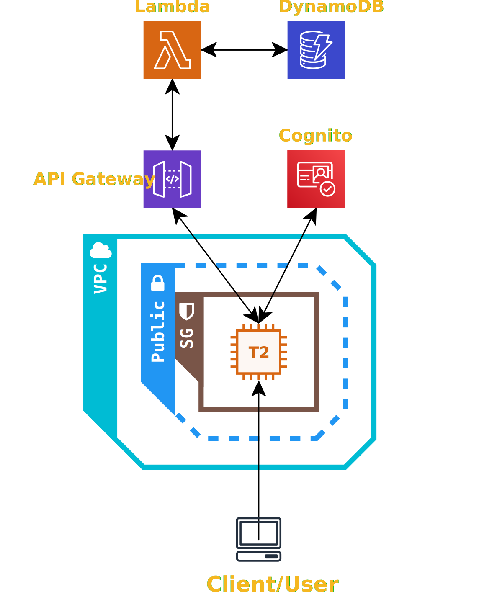

<div>
  <mat-card>
    <h1><u>Welcome to ToDoListNg!</u></h1>
    <br>
    <p>I created this website to gain experience making web applications with Angular.</p>
    <p>I recently took a AWS cloud foundations course and decided this would be a fantastic
      opportunity to deploy a web app on AWS. In  the near future,
      I will take the AWS Certified Cloud Practitioner exam.
      Learn more about me in the icon links above.
    </p>
    <br>
    <p>A bit on my AWS cloud architecture:</p>
    <ul>
      <li>This application is hosted on an Amazon EC2 instance.
      </li>
      <li>Authentication is handled by Amazon Cognito.
        <ul>
          <li>User data is stored in a user pool.</li>
        </ul>
      </li>
      <li>Amazon DynamoDB is utilized for the backend database to store tasks.
      </li>
      <li>Backend REST API was created using Amazon API Gateway.
        <ul>
          <li>API utilizes Cognito User Pools to control access.</li>
        </ul>
      </li>
      <li>
        An API call triggers an AWS Lambda function which sends the request to DynamoDB.
        DynamoDB then returns the response to AWS Lambda which in turn
        returns it to the calling client.
        <ul>
          <li>
            Why AWS Lambda?<br>
            <ul>
              <li>
                Instead of having a backend server hosted on an EC2 instance which will mainly be idling;
                a AWS Lambda runs only when needed and incurs charges only for the
                function call and its compute time.
              </li>
              <li>
                AWS Lambda is also a fully managed service
                and scales automatically.
              </li>
            </ul>
            For these reasons, I believe AWS Lambda is superior option in
            terms of cost effectiveness and operational overhead.
          </li>
        </ul>
      </li>
    </ul>
    <figcaption><u>Cloud Architecture Diagram</u></figcaption>
    <figure>
      
    </figure>
  </mat-card>
</div>
